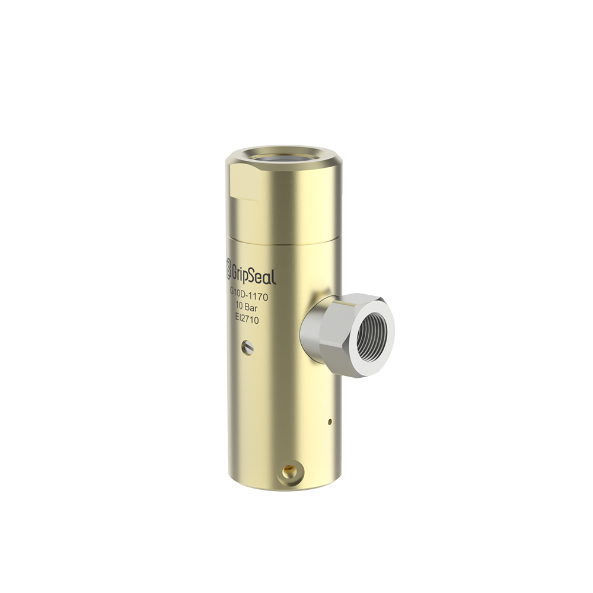

系列列表
冷却水管可评估系列
This page mirrors the domestic category shelf. Each card can open a series detail page with product details and selection tables。

G10
系列入口 for cooling water pipe sealing and repeated production test connections。
冷却水管口密封系列页面
查看系列详情
G10 Pro
Upgraded branch when higher stability, ergonomics, or fixture integration is needed。
冷却水Pro 路线工装
查看系列详情
G10D
型号 family route for special cooling water line structures and project-specific data。
冷却管路特殊结构选型表
查看系列详情